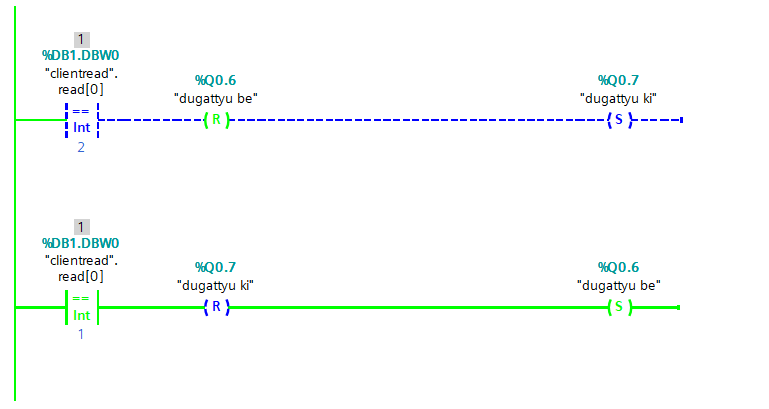
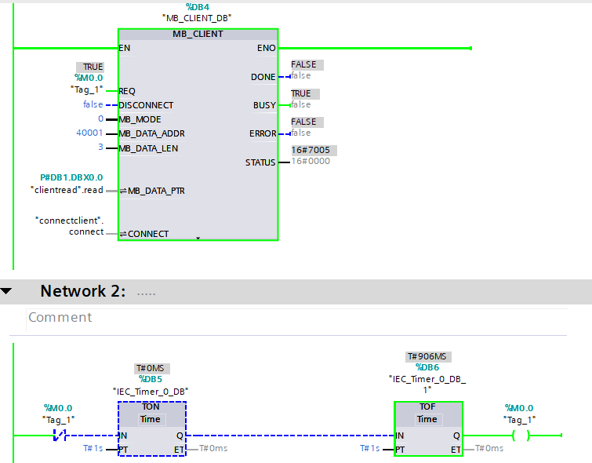
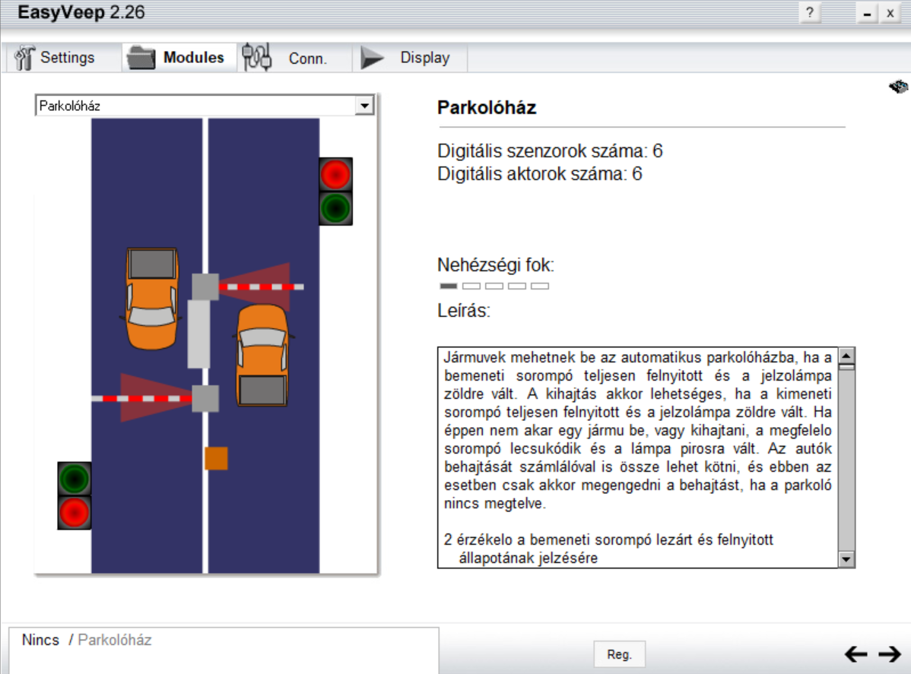
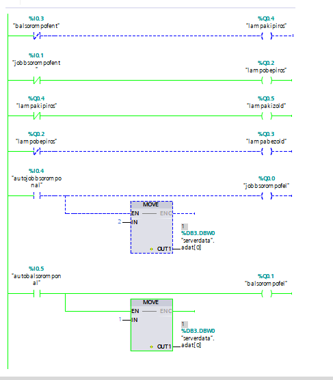
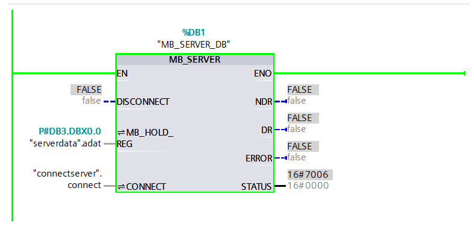

Tantárgy Ismertetése
Tantárgy: PLC és Iparibusz Rendszerek
Típus: Gyakorlati projekt dokumentáció
Célja: Ipari automatizálás alapjai
Ez az oldal a PLC és Iparibusz Rendszerek tantárgyban végzett projektjeim dokumentációja. Az alábbi projektek az iparági automatizálás különböző aspektusait mutatják be, a szekvenciális logika vezérlésétől az elosztott rendszerek kommunikációjáig.
Projektek
1. Dugattyú Vezérlés
Leírás: Pneumatikus dugattyú vezérlésének szimulációja és logikai programozása.
- Pneumatikus vezérlőelemek kezelése
- Szekvenciális logika implementálása
- Biztonsági funkcióintegrálása
- PLC alapú vezérlés
2. Kliens PLC Rendszer
Leírás: Elosztott PLC hálózatban a kliens oldal megvalósítása és konfigurációja.
- Iparibusz kommunikáció alapjai
- Hálózat konfigurálás és csatlakozás
- Adat küldés és fogadás
- Szinkronizálás szerver oldallal
3. Parkoló Ház Project
Leírás: Automatizált parkoló rendszer teljes szimulációja és vezérlése.
 - Bejáró és kijáró kapu vezérlés
- Hely detektor rendszer
- Elektronikus sorompó vezérlés
- Teljes rendszer szimulációja
- PLC létra diagramm logika
4. Szerver PLC Rendszer
Leírás: Elosztott PLC hálózatban a szerver oldal implementációja.
- Szerver szerepkör a hálózatban
- Több kliens kezelés egyidejűleg
- Adat feldolgozás és valós idejű szinkronizálás
- Hálózati protokollok alkalmazása
- Redundancia és hiba kezelés
Tanulási Eredmények
- Ipari automatizálás: PLC programozás alapjainak megértése és alkalmazása
- Hálózati kommunikáció: Iparibusz protokollok és elosztott rendszerek ismerete
- Szimulációs technológiák: Virtuális ipari rendszerek modellezése és tesztelése
- Logikai tervezés: Szekvenciális és kombinációs logika implementálása
- Rendszerszemlélet: Komplex ipari folyamatok integrálása és koordinálása